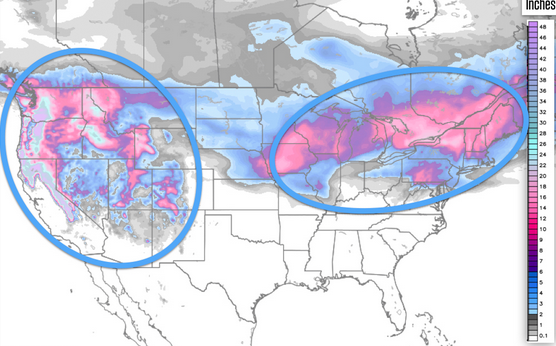
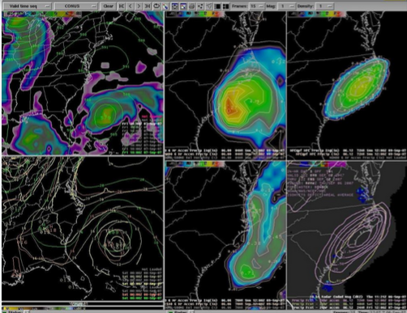
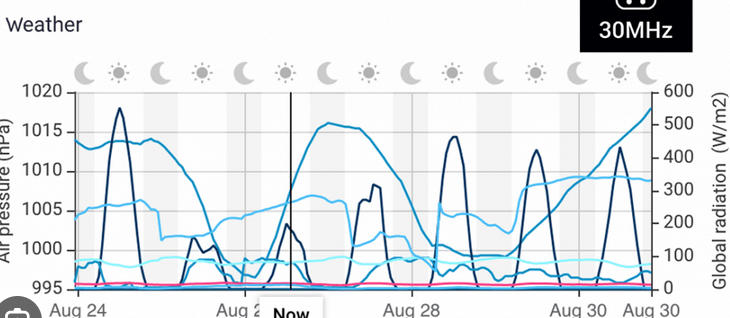

Les Modèles Météorologiques
Les météorologues s'appuient sur des modèles numériques sophistiqués pour prévoir les conditions météorologiques. Ces modèles utilisent des équations mathématiques complexes basées sur la physique de l'atmosphère, de la mer et de la terre pour simuler et prévoir l'évolution des conditions climatiques.
Comment fonctionnent les modèles ?
Les modèles météorologiques simulent des phénomènes tels que la température, la pression atmosphérique, l'humidité et le vent. Ces simulations sont réalisées à l'aide d'ordinateurs puissants qui traitent de vastes quantités de données recueillies par des satellites, des stations météorologiques et des bouées océaniques.
Le Rôle des Données et des Observations
Les prévisions météorologiques reposent fortement sur les données en temps réel. Les satellites collectent des images et des informations précieuses sur les systèmes météorologiques. Ces informations sont intégrées dans les modèles pour affiner les prévisions et garantir leur précision.